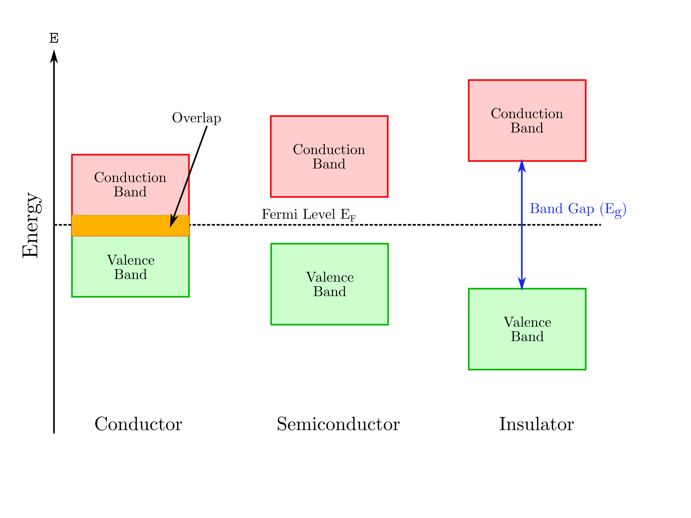
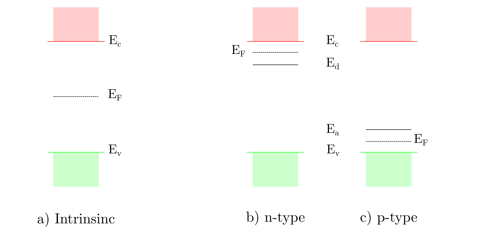
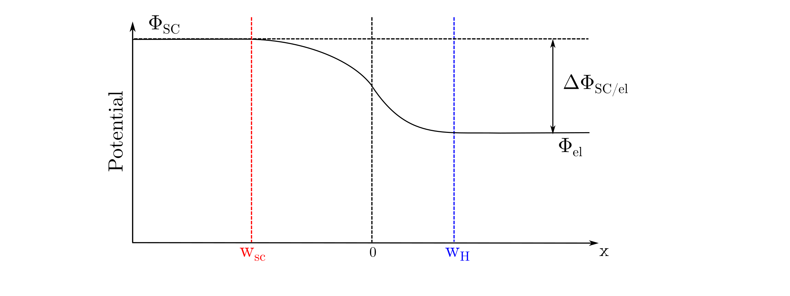
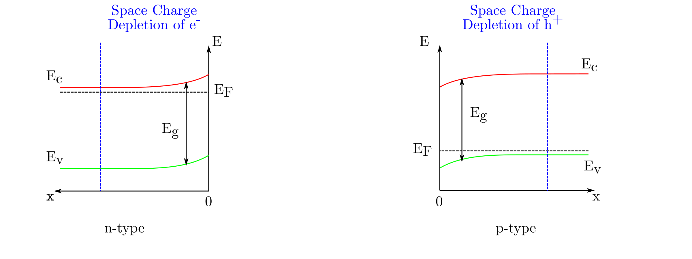
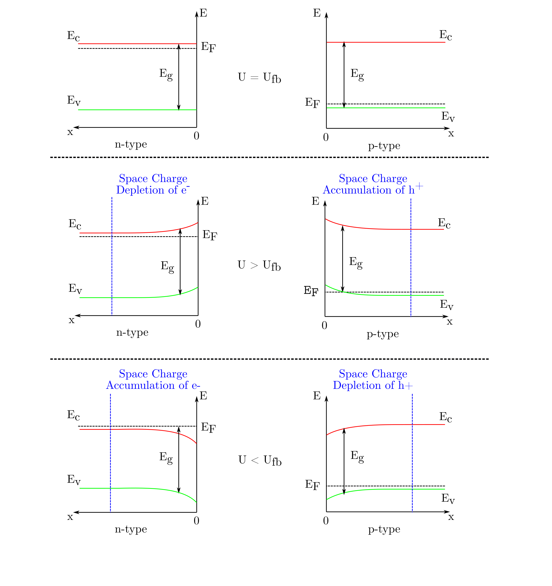

PhotoElectroChemistry (PEC)
Introduction
PEC takes advantage of the photovoltaic effect, discovered by Becquerel in 1839, that occurs at the interface of a semiconductor and an electrolyte. In fact, the first experience showed the occurence of a photopotential and a photocurrent under illumination when a silver electrode, covered with an oxide layer, was immersed in an acidic medium and connected to a platinum electrode. Nonetheless, the first studies focused on the understanding of the interfacial processes were performed much later (Stimming, Gerischer, Copeland).
The basics of photoelectrochemistry and application examples are presented here and they are largely described in the literature (Morrison, Gerischer, Memming, Marcus, Bard, Sato). Several hypotheses are needed in order to apply the theoretical concepts:
- semiconductors are considered to be ideal i.e. crystalized and homogeneous
- the dielectric constant of the semiconductor is independent of the light wavelength
- the capacity of the Helmholtz layer is greater than the capacity of the space charge capacitance
- the potential drop in the Helmholtz layer is independent of the applied potential and is negligible
The hypotheses are rarely fully respected in the case of oxides or passive films formed on common alloys. Nonetheless, the literature shows that the developed models can be applied to non-ideal systems such as oxides or passive layers.
Solids are generally classified into three groups: condcutors, semiconductors and insulators. Each category can be illustrated with a specific band structure as shown in the figure below (Marucco). Valence and conduction bands correspond to the allowed energy states for the electrons. The lowest energy level of the conduction band is labeled and the highest energy level of the valence is labeled . They are separated by a band gap, , with no allowed energy states. The repartition of the electrons among both bands are described by the position of the Fermi level, , which represents the highest energy state that can be occupied at 0K.

The electronic conduction is due to the movement either of the negatively charge electrons in the conduction band or the positively charged holes in the valence band or both simultaneously. Consequently, the conduction depends on the number of available charge carriers in the conduction and valence bands. In conductors, an overlap of the conduction and the valence bands occurs which means that the highest allowed energy band is partilly filled. The distinction between a semiconductor and an isolator is less obvious because the conduction depends on the band gap and the energy provided by the environment to the electron from the valence band in order to jump into the conduction band.
In semiconductors, charge carriers can be generated by three mechanisms: thermal, excitation, photoexcitation, doping, as shown here.

In the case of very low band gaps, thermal excitation can be enough to eject an electron from the valence band into the conduction band. Photoexcitation ejects electrons from the valence band into the conduction band when an incident photon, with an energy greater than the band gap, is absorbed. Doping introduces additional energy levels located in between the conduction and valence bands.
Doping occurs when the stoichiometry is altered or when impurities are introduced in the crystallographic lattice of the semiconductor. In the case of n-type semiconductors, the donor energy levels lie just under the conduction band. The electrons from the donor levels are ejected by thermal excitation. Consequently, the majority charge carriers are negatively charged electrons in the conduction band. Similarly, the acceptor energy levels , of p-type semiconductors, lie just above the valence band. The latter trap electrons from the valence band and therefore create holes. Consequently, the majority charge carriers are positively charged holes.
The Fermi level in intrinsic semiconductors is located at the mid-gap. The n-type and p-type doping shift the Fermi level towards band edges and , respectively. The next figure shows the position of the Fermi level with respect to the semiconductor types.

Semiconductor/electroyte interface in dark
A potential gradient occurs when a semiconductor comes into contact with an electrolyte as shown below.

The position of the Fermi level in the electrolyte with respect to the conduction and valence band edges leads to three different situations after a transient charge transfer. The flat band occurs when the Fermi level in the electrolyte matches the Fermi level in the semiconductor. Consequently, there is no potential gradient in the semiconductor. In a case of Fermi level mismatch, a band bending occurs in the semiconductor near the semiconductor/electrolyte interface. The band bending leads to either depletion or accumulation of majority charge carriers near the semiconductor/electrolyte interface. The spatial extension of the depletion/accumulation zone is called space charge as shown below.

Depletion and accumulation as well as band bending can be obtained by polarizing the semiconductor. As long as the hypothesis described in the introduction paragraph stand, the polarization does not modify the surface band edges and . Consequently, the polarization will only alter the band bending in the space charge. Depending on the applied potential, , with respect to the flat band, , three different situations will occur:
- : flat band situation no matter the semiconductor type
- : depletion (accumulation) in a case of n-type (p-type) semiconductor
- : accumulation (depletion) in a case of p-type (n-type) semiconductor

Without illumination, cathodic (anodic) currents are favored in a case of accumulation of electrons (holes) for an n-type (p-type) semiconductor. In fact, the majority charge carriers of n-type (p-type) semiconductors are electrons (holes). Reciprocally, anodic (cathodic) currents are not favored in a case of depends of electrons (holes) for an n-type (p-type) semiconductor. The junction between a semiconductor and an electrolyte acts like a Schottky diode.
Semiconductor/electroyte interface under illumination
The illumination of the semiconductor/electrolyte interface, with photons having an energy
greater than the band gap, :math:E_g, creates electron/hole pairs in the semiconductor.
By applying the adequate potential the pairs can be separated. As a consequence, the majority
charge carriers are attracted to the semiconductor bulk whereas the minority charge carriers
are drawn to the semiconductor/electrolyte interface where they can be transferred to a RedOx
species creating an additional current called photocurrent.
Figure :numref:fig_photocurrent_generation illustrates schematically the mechanism leading
to the creation of a photocurrent.
n-type (p-type) semiconductors generate anodic (cathodic) photocurrents where the electrons (holes)
move towards the external circuit whereas the holes (electrons) move towards the interface.
The photocurrent is significant when the semiconductor/electrolyte junction is in depletion.
Therefore, the applied potential on n-type (p-type) semiconductors is greater (lower) than the
flat band potential.
.. _fig_photocurrent_generation: .. figure:: ../media/ecx_pec-photocurrent_generation.png :width: 600 :align: center :alt: Photocurrent generation
Schematic representation of the mechanism generating a photocurrent.
Figure :numref:fig_iph_ntype and :numref:fig_iph_ptype show the anodic (cathodic) photocurrent
for a GaAs n-type (p-type) semiconductor.
.. _fig_iph_ntype: .. figure:: ../media/ecx_pec-iph_example_n_type.png :width: 300 :align: center :alt: Anodic photocurrent
Anodic photocurrent for n-type GaAs.
.. _fig_iph_ptype: .. figure:: ../media/ecx_pec-iph_example_p_type.png :width: 300 :align: center :alt: Cathodic photocurrent
Cathodic photocurrent for p-type GaAs.
:cite:t:gartner1959-1 and :cite:t:butler1977-1 proposed a simple and robust model
for describing the photocurrent considering that the recombination of the photogenerated
electron/hole pairs does not occur in the space charge. Therefore, the photocurrent is proportional
to the photon flux :math:\Phi_0. Moreover, the photocurrent depends on the relative ratio
between the space charge width, :math:w_{sc}, the depth of penetration given by the
inverse of the absorption coefficient, :math:\alpha and the average diffusion length,
:math:L_{sc}, of the minority charge carriers.
In other words, all absorbed photons generate electron/hole pairs and the
minority charge carriers are transferred to the electrolyte and therefore contribute to the
photocurrent whose expression is given by the equation :eq:eq_iph_complete.
.. math:: :label: eq_iph_complete
I_{ph} = \Phi _0 \left[ 1 - \frac{\exp (-\alpha _{sc} \cdot w_{sc})}{1+\alpha _{sc} \cdot L_{sc}} \right]
When :math:\alpha _{sc} \cdot w_{sc} << 1 and :math:\alpha _{sc} \cdot L_{sc} << 1,
the photocurrent is approximated by the equation :eq:eq_iph_approx.
.. math:: :label: eq_iph_approx
I_{ph} = \Phi _0 \cdot \alpha _{sc} \cdot w_{sc}
The expression of the space charge width, :math:w_{sc}, in depletion is given by the equation
:eq:eq_wsc_depletion according to the Mott-Schottky theory.
:math:N_{cc} represents the number of majority carriers, supposed to be equal to the doping,
:math:e corresponds to the elementary charge of an electron, :math:U represents
the applied potential, :math:U_{fb} represents the flat band potential, :math:\epsilon and
:math:\epsilon _0 represent the relative and the vacuum permittivity, respectively.
.. math:: :label: eq_wsc_depletion
w_{sc} = \sqrt{\frac{2 \epsilon \epsilon _0}{e N_{cc}} \cdot \left( U-U_{fb}-\frac{kT}{e} \right)}
The expression of the absorption coefficient :math:\alpha _{sc} with respect to the light energy
:math:h\nu is shown in equation :eq:eq_alpha. The value of :math:n depends on the band-band
transition type. :math:n takes discreet values 0.5 or 2 when direct or indirect transitions
are allowed, respectively.
.. math:: :label: eq_alpha
\alpha _{sc} = C \cdot \frac{(h\nu-E_g)^n}{h\nu} \text{ with } C=\text{constant}
The complete expression of the photocurrent is therefore given by the equation :eq:eq_iph_approx_complete.
The latter is obtained by substituting the absorption coefficient :math:\alpha _{sc} and the space charge
width :math:w_{sc} from the equation :eq:eq_iph_approx by the equations :eq:eq_wsc_depletion
and :eq:eq_alpha.
.. math:: :label: eq_iph_approx_complete
I_{ph} = \Phi _0 \cdot C \cdot \frac{(h\nu-E_g)^n}{h\nu} \cdot \sqrt{\frac{2 \epsilon \epsilon _0}{e N_{cc}} \cdot \left( U-U_{fb}-\frac{kT}{e} \right)}
The linear transform with respect to the energy of the equation :eq:eq_iph_approx_complete
is shown in equation :eq:eq_linear_trans_hv and it is used for determining the band gaps.
The linear transform with respect to the potential is shown in equation :eq:eq_linear_trans_U and
it is used for determining the semiconduction type, the flat band potential and the number of majority charge carriers.
.. math:: :label: eq_linear_trans_hv
\left[ \frac{I_{ph}\cdot h\nu}{\Phi _0} \right]^{1/n} = C \cdot (h\nu - E_g)
.. math:: :label: eq_linear_trans_U
I_{ph}^2 = C\cdot \left( U-U_{fb}-\frac{kT}{e} \right)